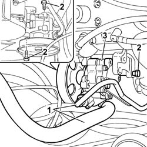
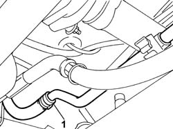
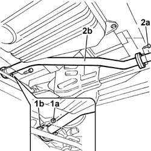
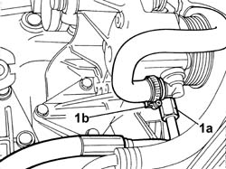
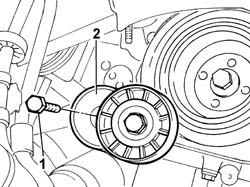
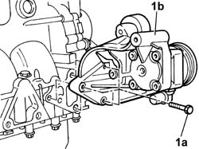
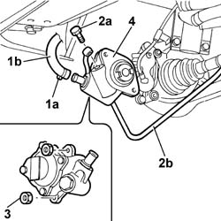

4130B20 POWER STEERING PUMP R R
- Path
- Procedures > 41 STEERING UNIT > 4130 POWER STEERING > 4130B POWER STEERING HYDRAULIC SYTEM > 4130B20 POWER STEERING PUMP R R
- Kind
- repair procedure (removal / refitting; the operation number is the code)
- Applies to
- engines: 2.0 JTD 8V, 2.3 JTD 16V, 2.8 JTD 8V; all production periods
- Interactive page
- https://sloeber94.github.io/elrnDB-fDct/en/#/244001171
Applies to: engines: 2.0 JTD 8V; all production periods
 Removing
Removing
 Refitting
Refitting- Position the vehicle on the lift.
Op. 7055B54 UNDER-ENGINE GUARD - R R
Op. 4450B04 RIGHT FRONT WHEEL R R
Op. 1092G10 SINGLE ENGINE BELT R R
1. Undo the connector, break the band and disconnect the fluid pipes from the power assisted steering pump.
2. Undo the fixing bolts.
3. Remove the power assisted steering pump complete with pulley.

Applies to: engines: 2.0 JTD 8V; all production periods
Refitting
Removing- Fit the power assisted steering pump tightening the fixing bolts to torque.
- Connect the two pipes to the power assisted steering pump.
Op. 1092G10 SINGLE ENGINE BELT R R
Op. 4450B04 RIGHT FRONT WHEEL R R
Op. 0010T70 POWER ASSISTED STEERING FLUID - REPLACE
Op. 7055B54 UNDER-ENGINE GUARD - R R
- Remove the vehicle from the lift.
Applies to: engines: 2.3 JTD 16V; all production periods
Removing
Refitting- Position the vehicle on the lift.
Op. 7055B54 UNDER-ENGINE GUARD - R R
Op. 4450B04 RIGHT FRONT WHEEL R R
Op. 1092B72 POWER STEERING PUMP DRIVE BELT - ALTERNATOR - R&R
1. Disconnect the oil pipe from the power steering pump and drain the power steering system into a suitable container.
- Reconnect the power steering fluid pipe.

Applies to: engines: 2.3 JTD 16V; all production periods
1. Undo the fixing nuts (1a) and separate the ridid middle section of the exhaust pipe from the turbocharger hose flange (1b).
2. Undo the bolts fixing the rear flange (2a) and remove the rigid middle section (2b) of the exhaust pipe.

Applies to: engines: 2.3 JTD 16V; all production periods
1. Undo the connector (1a), break the band (1b) and disconnect the fluid pipes from the power assisted steering pump.

Applies to: engines: 2.3 JTD 16V; all production periods
1. Undo the fixing bolt.
2. Remove the auxiliary drivebelt mobile tensioner.

Applies to: engines: 2.3 JTD 16V; all production periods
1. Undo the fixing bolts (1a) and remove the power assisted steering pump complete with support and pulley (1b).

Applies to: engines: 2.3 JTD 16V; all production periods
Refitting
Removing- Fit the power assisted steering pump complete with support and pulley and tighten the fixing bolts to torque.
 | Value - daNm | Fastening | Component | Ø |
|---|---|---|---|---|
. | 2,5 | Bolt | POWER STEERING PUMP | M8 |
- Fit the auxiliary drivebelt mobile tensioner.
- Tighten the mobile tensioner retaining bollt to torque.
| Value - daNm | Fastening | Component | Ø |
|---|---|---|---|---|
. | 2.5 | Bolt | ALT./AUXILIARY DRIVEBELT MOBILE VARIOUS | M8 |
- Connect the two fluid pipes to the power assisted steering pump.
- Fit the exhaust pipe attachment to the engine.
- Tighten the bolts fixing the flange to the rear exhaust silencer.
| Value - daNm | Fastening | Component | Ø |
|---|---|---|---|---|
. | 2,6 | Bolts | REAR SILENCER EXHAUST | M8 |
- Tighten the nuts fixing the exhaust pipe to the turbocharger to torque.
| Value - daNm | Fastening | Component | Ø |
|---|---|---|---|---|
. | 2.6 | Nuts | EXHAUST PIPE TO ENGINE | M8 |
Op. 1092B72 POWER STEERING PUMP DRIVE BELT - ALTERNATOR - R&R
Op. 4450B04 RIGHT FRONT WHEEL R R
Applies to: engines: 2.8 JTD 8V; all production periods
Removing
Refitting- Position the vehicle on the lift.
Op. 7055B54 UNDER-ENGINE GUARD - R R
Op. 4450B04 RIGHT FRONT WHEEL R R
Op. 1092D10 AIR CONDITIONER COMPRESSOR DRIVE BELT - R + R
Op. 1092B51 ALTERNATO/WATER PUMP DRIVE BELT - R+R FOR VERSIONS WITH AIR CONDITIONER
1. Break the band (1a) and disconnect the fluid pipe (1b) from the power assisted steering pump.
2. Undo the connector (2a) and disconnect the fluid pipe (2b) from the pump.
3. Undo the fixing nuts.
4. Remove the power assisted steering pump complete with pulley.

Applies to: engines: 2.8 JTD 8V; all production periods
Refitting
Removing- Fit the power assisted steering pump tightening the nuts bolts to torque.
- Connect the two pipes to the power assisted steering pump.
Op. 1092B51 ALTERNATO/WATER PUMP DRIVE BELT - R+R FOR VERSIONS WITH AIR CONDITIONER
Op. 1092D10 AIR CONDITIONER COMPRESSOR DRIVE BELT - R + R
Op. 4450B04 RIGHT FRONT WHEEL R R
Op. 7055B54 UNDER-ENGINE GUARD - R R
Op. 0010T70 POWER ASSISTED STEERING FLUID - REPLACE
- Remove the vehicle from the lift.
Topics linked from this page (8)
- 0010T70 POWER ASSISTED STEERING FLUID - REPLACE
- 1092B51 ALTERNATO/WATER PUMP DRIVE BELT - R+R FOR VERSIONS WITH AIR CONDITIONER
- 1092B72 POWER STEERING PUMP DRIVE BELT - ALTERNATOR - R&R
- 1092D10 AIR CONDITIONER COMPRESSOR DRIVE BELT - R + R
- 1092G10 SINGLE ENGINE BELT R R
- 4450B04 RIGHT FRONT WHEEL R R
- 5530A10 ALTERNATOR - R+R
- 7055B54 UNDER-ENGINE GUARD - R R